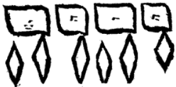
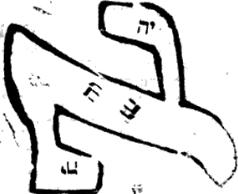

Pardes Rimmonim, English translation with the Hebrew.
We named it "From Below to Above" because in it is explained the matter, well-known in Rashbi's words in the Tikkunim, that the sefirot are ten from above to below and ten from below to above. Its chapters number five.
15:1:1 The Fifteenth Gate: The Gate From Below to Above.
שער ט"ו הוא שער ממטה למעלה:
15:1:2 What is intended in this Gate is to explain the matter mentioned concerning the Sefirot in the Tikkunim and in the Zohar, "from below to above" and "from above to below." For at first glance the matter is difficult: for what is from below to above is the same as what is from above to below, and he counts them twice, as will be explained.
הנרצה בשער זה לבאר ענין הנזכר בספירות בתיקונים ובזוהר ממטה למעלה וממעלה למטה, כי לכאורה הדבר קשה כי מה שהם ממטה למעלה היינו ממעלה למטה והוא מונה אותם ב"פ כאשר יתבאר:
15:1:3 Chapter One:
פרק ראשון:
15:1:4 The matter is that the Sefirot, just as they are from above to below in their order, Keter, Chokhmah, Binah, Gedulah, Gevurah, Tiferet, Netzach, Hod, Yesod, and Malkhut, so they are from below to above, Keter, Chokhmah, etc. How? Keter in Malkhut, and Chokhmah in Yesod, and Binah in Hod, and Gedulah in Netzach, and Gevurah in Tiferet, and Tiferet in Gevurah, and Netzach in Gedulah, and Hod in Binah, and Yesod in Chokhmah, and Malkhut in Keter. And so that this matter may not be difficult in the eyes of the discerning, we shall give him a fine parable: it is like the ray of the sun that spreads from its source and strikes the polished mirror; then its light reverses and returns to its source; and this is what is called among the investigators "the reversing light." And likewise we, when we wished to hint at this secret in these our gates, called it by the name "the reversing light" or "the returning light," for all is one matter. And let us return to the intent: that literally like the light mentioned, so is the likeness of the Emanation. For the Sefirot, which are the Emanation, spread from above to below in the direct order of the Sefirot; this is what we have sometimes called in these gates "direct light," and it is that they spread in this order. And so the light does: its station is in Malkhut, and it returns to its source, up to Keter, and there is its station. And this is "their end is embedded in their beginning and their beginning in their end": for Keter abides in Malkhut and Malkhut in Keter. And not this alone, but even the Malkhut that is in Keter returns and descends below; and its conduct is in the way of the first light, until it becomes light for light and light for light without end; and all is embedded, end in head and head in end. And this is the secret of the havayah in directness and the secret of the havayah in reversal: this in the secret of the direct light, and this in the secret of the reversing light, thus:

הענין כי הספירות כמו שהם ממעלה למטה כסדרן כתר חכמה בינה גדולה גבורה תפארת נצח הוד יסוד ומלכות כך הם ממטה למעלה כתר חכמה וכו' כיצד כתר במלכות וחכמה ביסוד ובינה בהוד וגדולה בנצח וגבורה בת"ת ות"ת בגבורה ונצח בגדולה והוד בבינה ויסוד בחכמה ומלכות בכתר. וכדי שלא יקשה ענין זה בעיני המשכיל נמשיל לו משל נאה והוא כדמיון נצוץ השמש המתפשט ממקורו ומכה במראה הלטושה אז אורו מתהפך וחוזר אל מקורו וזהו הנקרא בין החוקרים אור המתהפך. וכן אנחנו כאשר רצינו לרמוז בשערינו אלה אל הסוד הזה קראנוהו בשם אור המתהפך או אור החוזר שהכל ענין אחד. ונחזור אל הכוונה שממש כדמיון האור הנז' כן דמיון האצילות כי הספי' שהם האצילות ומתפשטות ממעלה למטה כסדר הישר בספי' זהו שקראנוהו לפעמים בשערים אלה אור הישר והוא שהם מתפשטות כסדר הזה. וכן האור עושה, מצבו במלכות וחוזר אל מקורו עד הכתר ושם מצבו. וזהו נעוץ סופן בתחלתן ותחלתן בסופן כי כתר שורה במלכות ומלכות בכתר ולא זה בלבד אלא אף המלכות שבכתר חוזר ויורד למטה. ומנהגה כדרך האור הראשון עד שנעשה אור לאור ואור לאור עד אין תכלית והכל נעוץ סוף בראש וראש בסוף וזהו סוד ההויה ביושר וסוד ההויה בהפוך זה בסוד האור הישר וזה בסוד האור המתהפך כזה:
15:1:5 The matter is hinted in the secret of Alef, which is Yod at the head and Yod at the end, thus:

And the secret is Yod at the head and Yod at the end, for the source of the light is always Yod. And from there the light flows: sometimes the Yod is above, and it is direct light, and source, and head; and sometimes the Yod is below, and it is reversing light, and the source of the returning light. And so their end turns out to be embedded in their beginning and their beginning in their end. And so Rashbi explained in the explanation of this Mishnah of Sefer Yetzirah, and these are his words in the Tikkunim (Tikkun 21, folio 60a): "And this stone is Yod at the head of Alef, and it is Yod at its end; of it is said (Isa. 46:10), 'declaring the end from the beginning'; and it is יו"ד ה"י וא"ו ה"י, including ten Sefirot, for their end is embedded in their beginning and their beginning in their end." Thus far its words.
הענין נרמז בסוד א' שהוא יו"ד בראש ויוד בסוף כזה:
והסוד הוא יוד בראש ויו"ד בסוף כי מקור האור לעולם הוא יו"ד. ומשם האור נשפע פעמים היו"ד למעלה והוא אור ישר ומקור וראש. ופעמים היו"ד למטה והוא אור מתהפך ומקור אל האור החוזר. ונמצא נעוץ סופן בתחלתן ותתלתן בסופן. וכן פירש הרשב"י בפי' משנת ס"י זו וז"ל בתיקונים (תקונא כ"א ד"ס.) והאי אבנא איהו י' בריש א' ואיהו י' בסופה, עלה אתמר מגיד מראשית אחרית, ואיהי יו"ד ה"י וא"ו ה"י כליל עשר ספירן דאיהו נעוץ סופן בתחלתן ותחלתן בסופן עכ"ל.
15:1:6 He intended in the name mentioned that the letters of the name are direct, יהו"ה, and the name reversed, הוה"י, and all is included in the ten letters that are in the filling of the name; and this is the matter of Alef, which is Yod at the head and Yod at the end. And it is "declaring from the beginning," which is Yod, in the secret of Chokhmah, and its tip, which is Keter; "the end," which is likewise Yod; and it is Chokhmah at the head and Chokhmah at the end. And after the matter has been explained in general and in brief, we come to decide the words of Rashbi, peace be upon him, in the Tikkunim [in the Introduction, folio 6a]: "'There is none holy like the Lord' (1 Sam. 2:2): the Cause over all, hidden and stored away in Keter; and from it the light spreads upon יהו"ה, which is: Yod, Chokhmah; He, Binah; Vav, including six Sefirot; He, Malkhut. And this is the spreading from above to below. And likewise its light spreads upon [the Yod of Adonai], from below to above, up to Ein Sof, which is hinted in אדנ"י: אי"ן, אנ"י. And therefore the two Yods of יאהדונה"י: ten, ten; the Kaf [of 'like the Lord']: this is the Kaf of Keter." Thus far its words. He taught explicitly our intent: that the direct light goes out and spreads from the source, which is Yod, to the end, which is He; and returns from the Yod of Adonai, which is Malkhut (for Adonai is a garment to YHVH, thus: יאהדונה"י, as we shall explain in the Gate of Names, chapter 13); and the name Adonai is the secret of the reversing light; for the name Adonai and the name הוה"י are all one matter and one hint. And this is the secret of אנ"י / אי"ן [ani, I / ayin, Nothing]: that is, ani is Adonai, in Malkhut, and ayin is in Keter; and all hints at "its end embedded in its beginning and its beginning in its end." And just as in the secret of Keter the Yod is over the He, so in ayin the Yod is over the Nun; for all is one hint and one matter. And just as in Malkhut the Yod is under the He, so in ani the Nun is over the Yod. And all is one: this in Chokhmah, which is Yod; Nun in Binah, which is He. And because two lights are unified in Keter, two measures in the Sefirah, ten from above to below and ten from below to above, therefore it is called Kaf [twenty], Keter. And this is "There is none holy like [ka-] the Lord," whose explanation is: Kaf, Keter, which is the spreading of the light from above to below and from below to above, as we explained.
כיון בשם הנזכר היות האותיות השם ביושר יהו"ה והשם בהפוך הוה"י והכל נכלל בעשר אותיות שבמלוי השם והיינו ענין א' שהוא יו"ד בראש ויו"ד בסוף. והוא מגיד מראשית, שהוא יו"ד בסוד החכמה וקוצה שהוא הכתר. אחרית, שהיא יו"ד ג"כ. והוא חכמה בראש וחכמה בסוף. ואחר שנתבאר הענין בכלל ובקיצור נבא להכריע בדברי הרשב"י ע"ה בתיקונים [בהקדמה ד"ו.] אין קדוש כה' עלת על כלא טמיר וגניז בכתר ומניה אתפשט נהורא על יהו"ה דאיהו י' חכמה ה' בינה ו' כליל שית ספירן ה' מלכות. והאי איהו אתפשטותא מעילא לתתא ואוף הכי אתפשט נהוריה על [י' מן אדני] מתתא לעילא עד אין סוף דאתרמז באדנ"י אי"ן אנ"י. ובג"ד י"י מן יאהדונה"י עשרה עשרה הכ"ף דא כ' מן כתר עכ"ל. הורה בפי' על כוונתינו כי האור הישר יוצא ומתפשט מן המקור שהוא יו"ד עד הסוף שהוא ה'. וחוזר מי' של אדנ"י שהיא המלכות כי אדנ"י לבוש אל יהו"ה כזה יאהדונה"י כמו שנבאר בשער השמות בפ' י"ג ושם אדנ"י הוא סוד אור המתהפך כי שם אדנ"י ושם הוה"י הכל ענין אחד ורמז א'. וזהו סוד אנ"י אי"ן שהוא אני אדנ"י במלכות ואי"ן בכתר והכל רומז נעוץ סופו בתחלתו ותחלתו בסופו. וכמו שבסוד הכתר הי' על ה', כן באי"ן הי' על הן' כי הכל רמז אחד וענין א'. וכמו שבמלכות י' תחת ה', כן באנ"י נ' על היו"ד. והכל אחד זו בחכמה שהיא י' נ' בבינה שהיא ה'. ולהיות ששתי אורות מתייחדים בכתר ב' מדות שבספיר' י' מלמעלה למטה וי' ממטה למעלה לכן נקרא כ' כתר והיינו אין קדוש כה' שפירושו כ"ף כת"ר שהוא התפשטות האור ממעלה למטה וממטה למעלה כדפי'.
15:1:7 And behold, in this much is included in little: that the Sefirot are ten from above to below, in the secret of the direct light, and likewise ten from below to above, in the secret of the reversing light, the returning light. And now we come in [the next] chapter to explain this matter even in some of the Sefirot.
והנה בזה נכלל המרובה במיעוט, שהספי' הם עשר ממעלה למטה בסוד האור הישר וכן עשר ממטה למעלה בסוד האור המתהפך אור החוזר. ועתה נבא בפרק זה לבאר ענין זה אפי' בקצת הספי':
15:2:1 The intent in this chapter is to explain that the matter of this order is not only for all ten Sefirot in their totality, but also for some of them. How? If we wish to say nine from Keter to Yesod and nine from Yesod to Keter; and likewise eight from Hod to Keter and eight from Keter to Hod; and likewise seven from Chesed to Malkhut and seven from Malkhut to Chesed. And not this alone, but even in one Sefirah, as we shall explain. And all these aspects are explained in the Tikkunim, as we shall explain. And the reason for them is that just as there is the shining of the return of the light from Malkhut, so there is the return of the light from Yesod, and likewise from Hod, and likewise for all of them. And just as there is direct light from Keter, so from Chokhmah, so from Binah, so from Chesed; for each Sefirah is a source for all that is beneath it, and each Sefirah is a mirror in which the light of the upper one strikes and the light returns; until in this way the luminaries rise, direct and returning, without number, as the inquirer will understand with his intellect when he sets his heart to what is hinted. And now we come to explain this matter from within the words of Rashbi in the Tikkunim (Tikkun 18, folio 31b), and these are his words: "These go out, and Sagron closes the gate after them. Behold, the masters of the signs knock at the entrance and say (Ps. 51:17), 'Adonai, open my lips.' 'Open': this is Petachon. And these are the masters of the eighteen [chai] blessings of prayer, from the side of the Life [Chai] of the worlds, who unite the Holy One, blessed be He, and His Shekhinah there; for the Righteous One is ninth from above to below and from below to above: nine vowel-points, nine cantillation marks. And of them is said, 'And God set them in the firmament of the heaven' (Gen. 1:17): and this is the Righteous One, in which are all the vowel-points; 'to give light upon the earth': this is the Shekhinah, which is included of all the letters." Thus far its words.
הכונה בפרק זה לבאר כי לא יהיה ענין סדר זה אל הספירות כל העשר בכללם לבד אלא גם אל קצתם. כיצד אם נרצה לומר תשע מכתר עד היסוד ותשע מיסוד עד הכתר וכן ח' מהוד עד כתר וח' מכתר עד הוד וכן ז' מחסד עד מלכות וז' ממלכות עד חסד ולא זו בלבד אלא אפי' בספירה אחת כאשר נבאר. וכל הבחינות האלה נתבארו בתקונים כאשר נבאר. והטעם אליהם הוא כי כמו שיש הארת חזרת האור מהמלכות, כן חזרת האור מהיסוד וכן מההוד וכן לכלם. וכמו שיש אור ישר מכתר כן מחכמה כן מבינה כן מחסד כי כל ספירה מקור לכל אשר תחתיה וכל ספירה היא מראה שבה מכה אור העליונה והאור חוזר עד שבדרך זה יעלו המאורות ישרים וחוזרים עד אין מספר כאשר יבין המעיין בשכלו כאשר יתן אל לבו אל הנרמז. ועתה נבא לבאר הענין הזה מתוך דברי הרשב"י בתיקו' (תקונא י"ח דף ל"א ע"ב) וז"ל אילין נפקין. וסגרו"ן סגר תרעא אבתרייהו הא מארי דאותות קא דפקין לפתחא ואמרין אדנ"י שפתי תפתח תפתח דא פתחו"ן ואלין אינון מארי דח"י ברכאן דצלותא מסטרא דח"י עלמין דמייחדין לקב"ה ושכינתיה תמן דצדיק תשיעאה איהו מעילא לתתא ומתתא לעילא ט' נקודין ט' טעמי. ועלייהו אתמר ויתן אותם אלקים ברקיע השמים ודא צדיק דביה כל נקודין, להאיר על הארץ דא שכינתא דאיהי כלילא מכל אתוון עכ"ל.
15:2:2 And the explanation: there are righteous ones who depend [above], each one according to his deeds, according to the emanation of his soul from the Sefirot. How? Those whose Torah is their craft are called masters of Torah, and they are in Tiferet; and he who guards his covenant is called righteous; and those who stand in prayer in the Amidah are called masters of the legs. And they depend above, each one according to his place and the order of his service in this world, as he said above in the matter, that the righteous enter above in their prayer according to their deeds. And he said that at their going out the angel appointed over the closing and locking of the gates of the palace closes the doors, until the masters of the signs come to pray. This name is in the Righteous One, called "sign." And he called them masters of the signs because the Righteous One is called "sign," and now the intent is to explain the matter of Yesod; therefore he called them masters of the signs. And the angel appointed over the opening, called Petachon, opens the palace of the King for them. And he said that they are the masters of the eighteen blessings, which are in the Righteous One, called "the Life of the worlds," after the eighteen [lives] that depend on it. And he said that in the Amidah they unite the Holy One, blessed be He, and His Shekhinah through the Righteous One, which unites them and binds them, as is known. "For the Righteous One is ninth": explanation: how are there eighteen in the Righteous One? And he says that they are nine from below to above and nine from above to below. And one cannot say that the matter is that when we reckon and count the Sefirah from above to below it will be nine, and when we count from below to above it will be nine; for if so they would never amount to more than nine; and how does he count eighteen? Rather, certainly Yesod is in the secret of the direct light and the returning light. And like the matter of Malkhut for the count of ten, so Yesod for the count of nine, and likewise Hod for the count of eight. And these do not resemble those; for each and every number is a secret by itself and an aspect by itself, just as the direct light and the returning light are not one matter. And the reason is that the direct light is the secret of the principal light, a foundation established in the Emanation; but the secret of the reversing light does not shine in the secret of the direct light. Like the ray of the sun: what returns from its power does not resemble its own self; for the returning one is one of its offshoots, by reason of one of the receivers, and the direct ray is the very self of the ray itself; and in this way we compare it in the Emanation. And just as the light in its return from within lanterns and the mirror that does not shine does not resemble its return from within a bright mirror, "whose form is sapphire" (Lam. 4:7), so is the matter in the secret of the return of the light from Malkhut or from Yesod and the like. And likewise the change of the light according to the change of the colors in the mirror that receives the ray and returns its light to its original source. And these are distinctions in the aspects of the lights, besides another distinction that there is between the direct and the returning, as we shall explain.
ופי' כי יש צדיקים תלויים כל א' וא' לפי מעשיו לפי אצילת נשמתו מהספירות. כיצד, מי שתורתן אומנתן קרוין מארי תורה והם בת"ת, והשומר בריתו קרוי צדיק, והעומדים בתפלה בעמידה קרוין מארי דרגלין. והם תלויין למעלה כל א' לפי מקומו וסדר עבודתו בעוה"ז כאמרו למעלה מן הענין כי הצדיקים נכנסים למעלה בתפילתם לפי מעשיהם. ואמר שביציאתן המלאך הממונה על סגירת ונעילת שערי היכל סוגר הדלתות עד אשר באים להתפלל מארי דאותות השם הזה הוא בצדיק הנקרא אות. וקראם מארי דאותות כי הצדיק נקרא אות ועתה הכונה לבאר בענין היסוד לכן קראם מארי דאותות. ומלאך הממונה על הפתיחה הנקרא פתחו"ן פותח להם היכל מלך. ואמר שהם בעלי ח"י ברכות שהם בצדיק הנקרא ח"י העולמים ע"ש ח"י [החיים] התלוים בו. ואמר כי בעמידה מייחדים קב"ה ושכינתיה ע"י הצדיק המיחד אותן וקושר אותם כנודע. דצדיק ט' איהו. פי' כיצד בצדיק הם ח"י, ואומר כי הם ט' ממטה למעלה וט' ממעלה למטה. ואין לומר שהענין הוא כשנחשוב ונמנה הספירה ממעלה למטה יהיו ט' וכשנמנה ממטה למעלה יהיו ט' שא"כ לעולם אינם עולים יותר מתשע וכיצד מונה י"ח. אלא ודאי היסוד הוא בסוד אור היש"ר ואור החוזר. וכענין המלכות למנין עשר כן היסוד למנין ט', וכן ההוד למנין ח'. ואינם דומים אלה לאלה כי כל מספר ומספר הוא סוד בפני עצמו ובחינה בפ"ע. כמו שאין האור הישר ואור החוזר ענין א'. והטעם כי האור הישר הוא סוד האור העיקר יסוד מוסד באצילות אמנם סוד אור המתהפך אינו מאיר בסוד אור הישר. כדמיון נצוץ השמש שלא ידמה החוזר מכחו אל עצמותו, כי החוזר תולדה אחת מתולדותיו בסבת אחד מהמקבלים, וניצוץ הישר הוא עצם הנצוץ בעצמו, ועד"ז נקיש באצילות. וכמו שלא ידמה האור בחזרתו מתוך העששיות והמראה שאינה מאירה אל חזרתו מתוך מראה בהירה ספיר גזרתה, כן הענין בסוד חזרת האור מהמלכות או מהיסוד וכיוצא בו. וכן שנוי האור לפי שנוי הגוונים במראה המקבלת הניצוץ וחוזרת אורה אל מקורה הקדמון. ואלה הם חלוקים בבחינות האורות בזולת חילוק אחר שיש בין הישר והחוזר כאשר נבאר.
15:2:3 And a further proof for the matter in the Tikkunim (Tikkun 18, folio 34), and these are its words: "And six constellations are from above to below, from Chesed to Yesod, and six from below to above, from Yesod to Chesed. From the side of Malkhut they are called the seven planets," etc. Thus far its words.
ועוד ראיה אל הענין בתקונים (תקונא י"ח דף ל"ד) וז"ל, ושית מזלות אינון מעילא לתתא מחסד עד יסוד, ושית מתתא לעילא מיסוד ועד חסד. מסטרא דמלכות אתקריאו ז' כוכבי לכת וכו' עכ"ל.
15:2:4 And behold, in this passage Rashbi counted six from Chesed to Yesod and six from Yesod to Chesed. And if it is not as we said, how are they twelve? They are only six. Rather, certainly as we explained; and that is in the secret of the direct light and the returning light, whose matter is not one, as we explained. And in this way also he further counted seven from Chesed to Malkhut; and if not in the way we explained, that "from the side of Malkhut" is the light returning from Malkhut up to Chesed, then the seven planets would turn out to be the six constellations, and all one. Rather, certainly as we explained. And because the light returning from Malkhut is not of the rank of the light returning from Yesod, therefore they are seven planets, which receive from the twelve constellations, as is known; and likewise Yesod pours effluence into Malkhut, and Malkhut receives from it. And with this preliminary what is explained in the Tikkunim (Tikkun 18, folio 33) concerning the union will be understood, and these are its words: "Come and see: יהו"ה אדנ"י: they are the Holy One, blessed be He, and His Shekhinah, in the two thighs: YHVH to the right, Adonai to the left; and they are the speculum that shines and the speculum that does not shine. In the Righteous One the two of them are one, יאהדונה"י. [And so in the two arms: YHVH to the right, Adonai to the left; in the central pillar יאהדונה"י.] The two of them in one union, in the secret of אמ"ן [Amen]; and therefore greater is the one who answers Amen than the one who blesses. Behold, this is from below to above. From above to below: יהו"ה אהי"ה, the two of them as one in the Supernal Keter, in this way: יאההויה"ה; in Chokhmah and Binah, YHVH, Ehyeh; in the two arms, YHVH, Ehyeh; in the central pillar the two of them as one; in Netzach and Hod, YHVH, Ehyeh, this to the right and this to the left; in the Righteous One the two of them in union as one; and likewise in Malkhut," etc. Thus far its words. And he dwelt at length there on things like this a great deal. And the intent is as we explained in the Gate of Essence and Governance, chapter 23: that the matter of coupling, as it is in Tiferet and Malkhut, so it is in Chokhmah and Binah, as explained there. And from the side of the coupling of Chokhmah and Binah the effluence flows to Tiferet and Malkhut, and the ray rises up above. And therefore, from above to below, to the right is the four-letter name, which is Chokhmah, and the name Ehyeh, which is Binah, to the left; and by way of the middle line they are unified; for Binah pours effluence by way of the left and Chokhmah by way of the right, and the middle is what makes the two extremes equal, as explained. But in the ascent, by way of the returning line, a ray rises from Tiferet and Malkhut by way of the grades: Tiferet to the right and Malkhut to the left, for this is the way of their ascent; and in the middle they are all unified in union. And we have already dwelt there on the explanation of this passage, in brief. And with the preliminary of the returning light that we have explained, further words of Rashbi in the Tikkunim will be understood, which at first glance contradict one another. In one place (in Tikkun 49, folio 83) he said that Shin is in Binah, the root of the tree; and elsewhere (in Tikkun 69, folio 107) he said that Shin below is the root of the tree in Malkhut, and likewise the lower He. And now it is difficult: if Shin, the root of the tree, is above in Binah, it is not below in Malkhut; and if it is below in Malkhut, it is not above in Binah. Rather, certainly, although the whole Emanation is one, unified, nevertheless in the aspect of the two lights mentioned they are two. There is a tree whose roots are above, in the upper source, and that is direct light, whose six branches spread out below; and there is a tree whose root is below, in the secret of the reversing, returning light, and whose six branches spread out above.
והנה במאמר הזה מנה רשב"י שש מחסד עד יסוד ושש מיסוד עד חסד. ואם אינו כמו שאמרנו, כיצד הם י"ב אינם אלא שית. א"ו כדפרישית, והיינו בסוד אור הישר ואור החוזר שאין עניינם אחד כדפי'. ועד"ז ג"כ מנה עוד ז' מחסד עד מלכות ואם לא על דרך שפי' דמסטרא דמלכות היינו אור החוזר ממלכות עד החסד א"כ נמצאו כי ז' כוכבי לכת הם שש מזלות והכל אחד א"ו כדפי'. ולהיות כי האור החוזר ממלכות אינו כמעלת האור החוזר מהיסוד לכן הם ז' ככבי לכת שהם מקבלים מי"ב מזלות כנודע. וכן היסוד משפיע במלכות והמלכות מקבלת ממנו. ובהקדמה זו יובן מה שנתבאר בתיקונים (תקונא י"ח דף ל"ג) בענין היחוד וז"ל ת"ח יהו"ה אדנ"י אינון קב"ה ושכינתיה בתרין שוקין יהו"ה לימינא אדנ"י לשמאלא ואינון אספקלריא המאירה ואספקלריא שאינה מאי' בצדיק תרווייהו חד יאהדונה"י [והכי בתרין דרועין. הוי"ה לימינא אד' לשמאלא בעמודא דאמצעיתא יאהדונה"י] תרווייהו ביחודא חדא בסוד אמ"ן, ובג"ד גדול העונה אמ"ן יותר מן המברך. הא איהו מתתא לעילא. מעילא לתתא, יהו"ה אהי"ה תרווייהו כחדא בכ"ע כגוונא דא יאההויה"ה בחכמה ובינה יהו"ה אהי"ה. בתרין דרועין יהו"ה אהי"ה בעמודא דאמצעיתא תרווייהו כחדא. בנצח והוד יהו'ה אהי"ה דא לימינא ודא לשמאלא. בצדיק תרוייהו ביחודא כחדא וכן במלכות וכו' עכ"ל. וכיוצא בזה האריך שם הרבה. והכונה כמו שבארנו בשער מהות והנהגה פכ"ג כי ענין הזווג כמו שהוא בת"ת ומלכות כן הוא בחכמה ובינה כמבואר שם. ומצד זווג החכמה ובינה שופע השפע אל תפארת ומלכות. והניצוץ עולה עד למעלה ולפיכך ממעלה למטה אל הימין שם בן ד' שהוא חכמה ושם אהיה שהוא בינה אל השמאל ודרך קו האמצעי מתיחדים כי הבינה משפעת דרך השמאל והחכמה דרך הימין והאמצע היא המשוה שני קצוות כמבואר. אמנם בעליה דרך הקו החוזר יעלה מת"ת ומלכות ניצוץ דרך המדרגות, הת"ת אל הימין והמלכות אל השמאל כי זה דרך עלייתם. ואל האמצעי מתיחדים כלם ביחוד. וכבר הארכנו שם בביאור המאמר הזה בקצרה. ועם הקדמת האור החוזר שביארנו יובנו עוד דברי הרשב"י בתקונים שהם לכאורה סותרים אלו לאלו, במקום אחד (בתקונא מ"ט דף פ"ג) אמר כי ש' הוא בבינה שרש האילן, ובמ"א אמר (בתקונא ס"ט דף ק"ז) כי ש' לתתא שורש האילן במלכות וכן ה' תתאה. ועתה קשה אם ש' שרש האילן למעלה בבינה אינו למטה במלכות ואם הוא למטה במלכות אינו למעלה בבינה. א"ו עם היות שכל האצילות אחד מיוחד עכ"ז בבחינת שתי האורות הנזכר הם שנים. יש אילן ששרשיו למעלה במקור העליון והיינו אור ישר שענפיו שית מתפרדין למטה, ויש אילן ששרשו למטה בסוד אור המתהפך החוזר וענפיו שית מתפרדין לעילא.
15:2:5 And the matter of his saying "Shin, the root of the tree": for Shin has in it three branches, in the secret of three lines, the line of Din, the line of Rachamim, the line of Chesed; and this is literally He, which is three Vavs, as we explained in the preceding gate. And after we have included much in little in this chapter, we come to explain the matter of the returning light itself and the need for it:
וענין אמרו ש' שרש האילן, שכן ש' בה ג' ענפים בסוד ג' קווים קו הדין קו הרחמים קו החסד, והיינו ממש ה' שהיא ג' ווים כדפי' בשער הקודם. ואחר שכללנו המרובה במעט בפ"ז, נבא לבאר ענין אור החוזר בעצמו והצורך אליו:
15:3:1 Now this is our intent: to explain the secret of the returning light from the side of its essence and its cause. And the matter is that the male, upper, always pours forth compassion, and the female, lower, receives judgment. And these four things are held to one another, that is to say: first, male or female; second, judgment or compassion; third, upper or lower; fourth, giving effluence or receiving effluence. And this thing will be understood in the secret that we explained in the Gate of Channels, chapter 1: that the light that rises, etc., is like the light that goes out from the eye, as explained there at length. And therefore, when Malkhut receives from the ten, behold, her face is turned to receive from all of them in the secret of their direct light; and she turns her face upward, and the name becomes ההו"י. And the upper male pours forth in order and in directness: it is the name יהו"ה. And this is the reason that the name in directness is compassion: because it is male, giving effluence in the order of the grades as they should be, this giving effluence to this. And Malkhut is the name in reversal of letters, thus: הוה"י, female, receiving. And therefore Rashbi, peace be upon him, said (in the Introduction, folio 3a): "Every havayah in which He rules over Vav, He over Yod, is female and is judgment": because the males are below the females; for the two Hes are females, Vav and Yod are males.
עתה זה כונתנו לבאר סוד האור החוזר מצד מהותו וסבתו. והענין הוא כי לעולם הזכר עליון משפיע רחמים והנקבה תחתון מושפעת דין. וד' דברים אלה הם אחוזים זה בזה. ר"ל א' זכר או נקבה, ב' דין או רחמים, ג' עליון או תחתון, ד' משפיע או מושפע. והדבר הזה יובן בסוד שפי' בשער הצינורות פ"א היות אור העולה וכו' כדמיון האור היוצא מן העין כמבואר שם בארוכה. ולכן בהיות המלכות מקבלת מהעשר הנה פניה מועדות לקבל מכלם בסוד אורם הישר והיא הופכת פניה כלפי מעלה ונעשה שם ההו"י. והזכר העליון משפיע בסדר וביושר הוא שם יהו"ה. וזה טעם שהשם ביושר רחמים מפני שהוא זכר משפיע בסדר המדרגות כהלכתן זו משפעת לזו. והמלכות השם בהפוך האותיות כזה הוה"י נקבה מקבלת. ולכן אמר הרשב"י ע"ה (בהקדמה דף ג'.) כל הוי"ה דשלטא ה' על ו' ה' על י' נוקבא איהי ודינא איהי. מפני שהזכרים למטה מהנקיבות כי ה"ה הם נקבות ו"י הם זכרים.
15:3:2 And behold, when the female turns her face to receive, she certainly does not pour forth; and when the male pours forth, he does not receive. And so they said in the book of the Zohar and in Sefer ha-Bahir that a man is forbidden to remain with his hands raised in prayer more than three hours. And the reason is that the raising of the hands indicates pouring forth, as in the matter (Lev. 9:22) "And Aaron lifted up his hands toward the people and blessed them," as explained in the Zohar, Parashat Yitro (folio 67). And because Malkhut is called "hour," and she receives from three lines [in three hours], behold, her pouring forth is three hours only; and if a man raises his hands longer, he is endangered. Because while the ten Sefirot pour forth they do not receive; and if so, one must wait until they receive, so that they may pour forth. And this is the reason for (Exod. 17:11) "and when he let down his hand, Amalek prevailed."
והנה בהיות הנקבה חוזרת פניה לקבל אינה משפעת ודאי ובהיות הזכר משפיע אינו מקבל. וכן אמרו בספר הזהר ובספר הבהיר שאסור אדם להתעכב בנשיאות ידיו בתפלה יותר מג' שעות. והטעם כי נשיאות הידים מורה על ההשפעה כענין וישא אהרן את ידיו אל העם ויברכם כמבואר בזוהר פ' יתרו (ד"סז). ומפני שהמלכות נקרא שעה והיא מקבלת מג' קוים [בג' שעות] הנה השפעתה ג' שעות בלבד ואם ירים אדם ידיו יותר יסתכן. מפני שבעוד שעשר ספי' משפיעות אינם מקבלות וא"כ צריך להתעכב עד שיקבלו כדי שישפיעו וזהו סבה (שמות יז יא) וכאשר יניח ידו וגבר עמלק [לד].
15:3:3 Behold, a clear proof that while the Sefirot pour forth they do not receive, and while the Sefirot receive they do not pour forth. And even if somewhat to the contrary of this is found in the Zohar, in its saying "the Shekhinah in the lower ones," and all the details of this inquiry found in the Zohar, it is possible to say that this is specifically near its pouring forth, not while it is pouring forth. However it may be: because the secret of the havayah in reversal is the secret of the turning of the face from below to above, to receive, and it does not pour forth, this is the reason that it is judgment and it is female; and likewise the male who pours forth is compassion. And indeed, concerning the four-letter name in reversal, something close to this is found in one of the writers of secrets, of blessed memory: "Know that just as there are ten inner Sefirot, from which the good comes to Israel, so there are ten outer Sefirot that stand against them; and when Israel commit transgressions, they act according to the evil that Israel do, God forbid. And you, son of man, see also with the eye of your intellect: you already know that the Unique Name stands in four Sefirot: for the Yod stands in the Sefirah of Chokhmah, and He in Binah, Vav in Tiferet, He in Malkhut. And when Israel do the will of the Omnipresent and His commandments, then the attribute of compassion is clothed over the attribute of judgment: for the Yod that is in Chokhmah indicates compassion, and it is clothed over the He that is in Binah, which indicates the attribute of judgment; and likewise the Vav that is in Tiferet, indicating the attribute of compassion, is clothed over the He that is in Malkhut; and then the whole world is in peace, and He has compassion on His children as a father has compassion on his children. And if, God forbid, Israel do the opposite, then the attribute of compassion turns into the attribute of judgment: for the He that is in Malkhut is clothed over the Vav of Tiferet, and likewise the He that is in Binah is clothed over the Yod that is in Chokhmah, which indicates the attribute of judgment. And know that when the Yod begins the name, and afterwards He, He, then it indicates the attribute of compassion; and likewise the Vav, when it begins and afterwards He, He, it indicates compassion; and when one of the two Hes begins, then they indicate judgment." Thus far his words.
הנה ראיה מבוררת כי בעוד שהספירות משפיעות אינם מקבלות ובעוד שהספירות מקבלות אינם משפיעות. ואף אם ימצא מנגד לזה קצת בזהר באמרו שכינה בתחתונים וכל פרטי הדרוש הזה הנמצא בזהר, אפשר לומר כי זה דוקא סמוך להשפעתו לא בעוד שהיא משפעת. איך שיהיה מפני שסוד ההויה בהפוך הוא סוד חזרת הפנים ממטה למעלה לקבל ואינה משפעת זו היא סבה שהיא דין והיא נקבה וכן הזכר המשפיע הוא רחמים. ואולם בשם בן ד' בהפוך נמצא קרוב לזה לאחד מכותבי סודות ז"ל דע כי כמו שיש ע"ס פנימיות אשר הטוב בא מהם לישראל ג"כ יש י"ס חיצונות שעומדין כנגדם וכשישראל עושין עברות הם פועלות כפי הרע שישראל עושין ח"ו. ואתה בן אדם ראה גם בעין שכלך כבר ידעת כי בד' ספירות עומד השם המיוחד כי הי' עומדת בספי' חכמה וה' בבינה ו' בת"ת ה' במלכות. וכשישראל עושין רצונו של מקום ומצותיו אז מתלבשת מדת רחמים על מדת הדין כי היו"ד שבחכמה מורה על הרחמים ומתלבש על הה' שבבינה שמורה על מדת הדין וכן ו' שבת"ת מורה על מדת הרחמים מתלבש על ה' שבמלכות ואז העולם כלו בשלום ומרחם על בניו כרחם אב על בנים. ואם ח"ו ישראל עושין להיפך אז מתהפך מדת רחמים למדת הדין כי ה' שבמלכות מתלבשת על הו' של הת"ת וכן ה' שבבינה מתלבש על היוד שבחכמה שמורה על מדת הדין. ודע לך כי כשהיו"ד מתחלת השם ואח"כ ה"ה אז מורה מדת רחמים וכן הו' כשמתחלת ואחר כך ה"ה הוא מורה על רחמים, וכשמתחלת אחת מן הב' ההין אז מורות על הדין עכ"ל.
15:3:4 And there is no doubt that in what he said at the beginning of his words, "just as there are inner Sefirot," etc., "so there are outer Sefirot," his intent is not the husks, since he concludes with the name in reversal of letters. Rather, certainly, the intent is the returning light, which raises the compassion in the secret of receiving; and this is the secret of the reversal in the letters. And needless to say [it holds] in the letters of the whole name, that this matter is so, as explained above; but even in two letters, such as Yod-He or He-Yod, and likewise Vav-He or He-Vav, as that young scholar explained. And so it is explained in the Tikkunim, as we shall explain in chapter 5. And likewise this principle is explained in Sefer Yetzirah, the last Mishnah of chapter 3, and these are its words: "He made Alef king over air [ruach], and bound a crown to it, and combined them one with another, and formed with them the air [avir] in the world, moisture in the year, and the body in the soul: male in Alef-Mem-Shin and female in Alef-Shin-Mem. He made Mem king over water, and bound a crown to it, and combined them one with another, and formed with them earth in the world, cold in the year, and the belly in the soul, male and female: male in Mem-Alef-Shin, female in Mem-Shin-Alef. He made Shin king over fire, and bound a crown to it, and combined them one with another, and formed and sealed with them heaven in the world, heat in the year, and the head in the soul, male and female: male in Shin-Mem-Alef and female in Shin-Alef-Mem." Thus far its words.
ואין ספק שמה שאמר בתחלת דבריו באמרו כמו שיש ספי' פנימיות וכו' כן יש ספירות חיצוניות, שאין כונתו בקליפות משום דמסיק בהשם בהפוך אתוון. אלא ודאי הכונה על האור החוזר המעלים הרחמים בסוד הקבלה וזהו הסוד ההפוך באותיות. ואין צריך לומר באותיות השם כלו שיהיה הענין הזה כמבואר לעיל, אלא אפי' בב' אותיות כגון י"ה או ה"י וכן ו"ה או ה"ו כמו שפי' האי צורבא מרבנן. וכן מבואר בתקונים כמו שנבאר בפ"ה. וכן נתבאר העיקר הזה בס"י משנה אחרונה שבפ"ג וז"ל המליך א' ברוח וקשר לו כתר וצרפן זה בזה וצר מהן אויר בעולם רויה בשנה וגוייה בנפש זכר באמש ונקבה באש"ם. המליך מ' במים וקשר לו כתר וצרפן זה בזה וצר בהן ארץ בעולם קור בשנה ובטן בנפש זכר ונקבה זכר במא"ש נקבה במש"א. המליך ש' באש וקשר לו כתר וצרפן זה עם זה וצר וחתם בהם שמים בעולם חום בשנה וראש בנפש זכר ונקבה זכר בשמ"א ונקבה בשא"ם עכ"ל.
15:3:5 And behold, in this Mishnah all our intent is explained, and this is its explanation. And before all else it is fitting for the inquirer to understand what we shall write in the Gate of Particulars of Names concerning the matter of the formation of man by means of the rolling of the letters and their permutation; and there we shall explain at length the matter of "He made such-and-such a letter king and bound a crown to it." And nevertheless we shall not withhold our hands from explaining here what suffices for the understanding of the Mishnah. And the matter is that the letters are branches branching out from the names, that is to say, powers emanated from the very self of the Sefirot, like those who dwell "in the clefts of the rock, the height of their dwelling" (Obad. 1:3), as we shall dwell at length in the Gate of Letters. And because the powers do not perform their action except through their combination with their sources, and in their return and binding to their source much effluence flows upon them to perform their action with strength, as we shall dwell at length in explaining them in the Gate of Particulars of Names, therefore it was necessary for the formation that it be through the branches unified with their sources, that is, the Sefirot. And the letters, which are branches branching out from them: when they are unified with the root and the powers return to their source, then their action is complete and good. And because the sources of the letters include ten Sefirot, as we shall dwell at length in the Gate of Letters, therefore, to strengthen their power for creation, each and every branch was unified with its source. And this is what he meant in saying "He made the letter Alef king," or Mem, or Shin; and likewise for the seven doubles, Bet Gimel Dalet Kaf Pe Resh Tav; and likewise for the twelve simples, He Vav Zayin Chet Tet Yod Lamed Nun Samekh Ayin Tzadi Kof. And the explanation of "He made king": He unified that letter and that spiritual branch with Malkhut; and afterwards "He bound a crown to it." And "bound" [קש"ר]: explanation: teki'ah, shevarim, teru'ah, which are the three fathers, Chesed, Gevurah, Tiferet, with their branches, Netzach, Hod, Yesod, and with their fathers, which are Chokhmah, Binah, Keter. And this is the "crown" explicitly mentioned in the Mishnah; for the first three are included in the name Keter, as they are included in the name Nothing; and likewise the three of them are a crown to the three lines, Chesed, Din, and Rachamim. And according to all the explanations, the intent is to unify the letter in its root, which is the Sefirot. And he said Alef with air, and Shin with fire, and Mem with water: the intent is that Alef-Mem-Shin hints at Yod-He-Vav. For the Yod is Chokhmah, for Chokhmah is the root of the waters of Chesed; and likewise He is in Binah, and likewise Shin is in Binah, the root of fire, which is the root of judgment, in the way we explained in the Gate of Essence and Governance, chapter 25; and the Vav is in Keter, in the secret of Da'at, as we explained in the Gate of Manifestations, chapter 6; and likewise the Alef, for Keter is the root of the air that arbitrates between the extremes, as we explained in the Gate of Arbiters. And therefore, when we wish to unify the branch, we unify it in its root, unified in its ten Sefirot. And this is what he meant in saying "He made Alef king over air, Mem over water, and Shin over fire": for the union and the binding is to unify the branch in the root particular to it, whether Chesed, whether Din, whether Rachamim, and in its ten Sefirot that are found for it according to its nature. And after the union in the branches, it needs further to receive from the other sources themselves, so as to be included of Chesed, Din, and Rachamim; and for this he said "and combined them one with another," which refers back to the letters Alef-Mem-Shin mentioned from the beginning of the chapter until here. And through the combination the powers are unified with a true and complete union, and the lower rolls and rises, and the upper descends, until the thing becomes an inclusive havayah. And for this, after the union of the branch in its root with its ten Sefirot, it had to be unified in three powers, which are Alef-Mem-Shin, which include the whole Emanation; and this is "and combined them one with another"; and then that manifestation was formed and emanated and brought into being in three places, which are world, year, soul [עש"ן], as we shall explain them at length in the Gate of Particulars of Names, on the name of seventy-two. And through their spiritual formation they were formed in the corporeality of these worlds. And because the Alef is head to the havayah and the principal of the form that is formed (for the principal of the manifestation is from the air, and the fire and the water are mere assistance, like the likeness of a composition, but the prevailing is from the air), therefore, both in the male and in the female, the Alef comes at the head of the combination, and the water and the fire are lower. And for the reason that the male is from above to below, the Mem, which is the water, comes over the Shin, which is the fire, as is their way, for the right is always over the left; and this is אמ"ש, which is וי"ה: Vav [and] Yod over He. And when the female comes, she comes from below to above, which is אש"ם: the Shin, which is the fire, over the Mem, which is the water; and this is אש"ם, fire over water, the left over the right, as is the way of the female, which is וה"י, which is He above Yod. The female is always the opposite of the male, for the male pours forth and the female receives; and therefore the female is judgment. And when He made the letter Mem king, which is the principal of the water, therefore both in the male and in the female the Mem comes first, and it is what prevails in the composition; for the attribute of (the day) [the water] is always determinative, and therefore the principal of the attribute prevails; and of the two attributes, which are the air and the fire, either this prevails or that. The male in מא"ש: the Alef, which is the air, over the Shin, which is the fire; and he made compassion prevail over judgment, as is the way of the male, to incline it to the right in compassion: Alef over Shin, which is Vav over He, male over female. And the female comes from below to above: the female in מש"א made the fire prevail over the air, the judgment over the compassion, He over Vav, making judgment prevail over compassion and turning upward; for the male pours forth and the female receives. And when He made the letter Shin king, which is the fire in the strength of judgment, the male came in שמ"א; for the principal always prevails, according to what is the principal element, both in the male and in the female. And therefore the Shin prevails both in the male and in the female; but the other letters of the composition were divided in disagreement: for the male made the element of water, which is the Mem, prevail over the element of air, which is the Alef, that is, הי"ו; for the He prevails, because it is the element of fire, as explained; but it is Yod over Vav. And the reason is that although the Vav, which is the air, which is the Alef, is compassion, nevertheless it is mediated compassion, and the compassion of Chesed is complete compassion; and therefore he chose the right for himself and made it prevail over the mediation, as is the way of the Yod, which is always over Vav. But the female comes in שא"ם: she made the element of air prevail over the water, and inclined it toward the fire; and so the letters are found in her from below to above, as is her way, the opposite of the male; for the female makes the air prevail over the water and turns upward, and the male pours forth and turns downward; and therefore the female comes in שא"ם, which is הו"י: the letters reversed, turning upward to receive. Thus far reaches the explanation of the Mishnah; and from within it is explained the matter of the reversal even in two letters, as explained above.
והנה במשנה זו מבוארת כל כונתינו. וזה פירושו. וקודם כל דבר ראוי אל המעיין להשכיל במה שנכתוב בשער פרטי השמות מענין יצירת האדם על ידי גלגול האותיות וצירופם ושם נבאר בארוכה ענין המליך אות פלונית וקשר לו כתר. ועכ"ז לא נשיב ידינו מלבאר הנה מה שיספיק אל הבנת המשנה. והענין כי אותיות הם ענפים מסתעפים מהשמות ר"ל כחות אצולים מעצמות הספירות כשוכנים בחגוי סלע מרום שבתם כמו שנאריך בשער האותיות. ולהיות כי הכחות אינם פועלים פעולתם אלא ע"י צירופם אל מקוריהם ובחזרתם והתקשרם אל מקורם יושפע עליהם רב שפע לפעול פעולתם בחוזק כאשר נאריך ביאורם בשער פרטי השמות. לפיכך הוצרך אל היצירה שיהיה על ידי הענפים המתיחדים אל מקוריהם דהיינו הספירות. והאותיות שהם ענפים המסתעפים מהם בהתיחדם עם השרש וחזרת הכחות אל מקורם אז פעולתם שלימה וטובה. ולהיות מקורי האותיות כוללים י"ס כאשר נאריך בשער האותיות, לזה לחזק כחם אל הבריאה נתיחד כל ענף וענף אל מקורו. וזה רצה באמרו המליך אות א' או מ' או ש', וכן לז' כפולים בג"ד כפר"ת, וכן לי"ב פשוטות הו"ז חט"י לנ"ס עצ"ק. ופי' המליך, ייחד אותה האות ואותה הענף הרוחני אל המלכות ואח"כ וקשר לו כתר. וקשר פי' תקיעה שברים תרועה שהם ג' אבות חג"ת עם ענפיהם נצח הוד יסוד ועם אבותיהם שהם חכמה בינה כתר. והיינו כתר הנזכר בפי' במשנה כי ג"ר כלולות בשם כתר כענין שכלולות בשם אי"ן וכן שלשתם כתר לג' קוין חסד דין ורחמים. ולכולהו פי' הכונה ליחד האות בשרשו שהם הספי'. ואמר א' ברוח וש' באש ומ' במים, הכונה כי אמ"ש רמיזת' יה"ו כי היוד הוא חכמה כי החכמה שורש למימי חסד. וכן ה' היא בבינה וכן ש' הוא בבינה שרש האש שהוא שורש הדין ע"ד שפי' בשער מהות והנהגה פכ"ה. והוא"ו הוא בכתר בסוד הדעת כדפי' בשער המציאות פ"ו. וכן האל"ף, כי הכתר שרש לאויר המכריע בין הקצוות כמו שפי' בשער המכריעין. ולכן כאשר נרצה ליחד הענף נייחד אותו בשרשו המיוחד בעשר ספירותיו. וזה רצה באמרו המליך א' ברוח מ' במים וש' באש, כי היחוד והקשר הוא לייחד הענף בשרשו המיוחד לו אם חסד אם דין אם רחמים ובעשר ספירותיו הנמצאים לו לפי טבעו. ואחר היחוד בענפים צריך עוד לקבל משאר המקורות עצמן להיותו כלול מחסד דין ורחמים ולזה אמר וצרפן זה בזה שהוא חוזר אל האותיות אמ"ש הנז' מראש הפרק עד כאן. וע"י הצירוף יתייחדו הכחות יחוד אמיתי ושלם ויתגלגל ויעלה התחתון וירד העליון עד ישוב הדבר הוייה כוללת. ולזה אחר היחוד של הענף בשרשו עם עשר ספירותיו הוצרך להיות מתיחד בג' כחות שהם אמ"ש הכוללים כל האצילות וזהו צרפן זה בזה, ואז היה נוצר ומתאצל ומתהווה המציאות ההוא בג' מקומות שהם עש"ן כאשר נבארם בארוכה בשער פרטי השמות בשם ע"ב. וע"י ציורם ברוחניות היו מצטיירים בגשמות העולמים הזה. ומפני שהא' הוא ראש להויה ועיקר לצורה המצטיירית, כי עיקר המציאות הוא מהרוח, והאש והמים סיוע בעלמא כדמות הרכבה, אבל התגבורת הוא מהרוח, לכן בין בזכר בין בנקבה בא הא' בראש הצרוף והמים והאש תחתונים. ומטעם היות הזכר ממעלה למטה באה המ' שהם המים על הש' שהוא האש כדרכם כי הימין לעולם על השמאל וזהו אמ"ש שהוא וי"ה ו"י על ה'. וכשבאה הנקבה באה ממטה למעלה שהוא אש"ם, הש' שהיא האש על המ"ם שהוא המים וזהו אש"ם אש על המים השמאל על הימין כדרך הנקבה שהוא וה"י שהוא ה' למעלה מי'. לעולם הנקבה הפך הזכר כי הזכר משפיע והנקבה מקבלת ולכן הנקבה דין. וכאשר המליך אות מ' שהוא עיקר המים לכן בין בזכר בין בנקבה המ' קודמת והיא הגוברת בהרכבה כי לעולם מדת (היום) [המים] גורמת ולכן גוברת עיקר המדה ושתי המדות שהם האויר והאש או זה יגבר או זה הזכר במא"ש שהיא הא' שהוא האויר על הש' שהוא האש והגביר הרחמים על הדין כדרך הזכר לנטותו אל הימין ברחמים א' על ש' שהוא ו' על ה"א זכר על נקבה. והנקבה באה ממטה למעלה הנקבה במש"א הגבירה האש על האויר. הדין על הרחמים ה"א על וא"ו מגברת הדין על הרחמים ופונה למעלה כי הזכר משפיע והנקבה מקבלת. וכאשר המליך אות ש' שהוא האש בתוקף הדין בא הזכר בשמ"א שלעולם גוברת העיקר כפי מה שהוא עקר היסוד בין בזכר בין בנקבה. ולכן הש' גובר בין בזכר בין בנקבה אבל שאר אותיות ההרכבה נחלקו למחלוקת כי הזכר הגביר יסוד המים שהיא המ' על יסוד האויר שהוא הא' דהיינו הי"ו כי הה' גוברת מפני שהוא יסוד האש כמבואר אבל הוא י' על ו'. והטעם שעם היות שהוא"ו שהוא האויר שהוא האל"ף הוא רחמים, עכ"ז הם רחמים ממוצעים ורחמי החסד הן רחמים גמורים, ולכן בחר לו הימין והגבירו על המיצוע כדרך היו"ד שהיא לעולם על ו'. אבל הנקבה באה בשא"ם שהגבירה יסוד האויר על המים. והטה אותו כלפי האש ונמצאו בה האותיות ממטה למעלה כדרכה הפך הזכר כי הנקבה מגברת האויר על המים ופונה למעלה והזכר משפיע ופונה למטה ולכן באה הנקבה בשא"ם שהוא הו"י האותיות מהופכות פונות למעלה לקבל. ע"כ הגיע ביאור המשנה, ומתוכה נתבאר ענין ההפוך אפי' בשתי אותיות כמבואר לעיל:
15:4:1 This inquiry is further explained in a fine light in Sefer ha-Bahir; these are its words: "His disciples said to him: Our master, from above to below we know; from below to above we do not know. And he answered: But are not from below to above and from above to below one? [They said:] Our master, the one who ascends is not like the one who descends; for the one who descends descends at a run, and the one who ascends is not so. And not only that, but the one who ascends can ascend by another way, by which he did not descend. He said to them: Go out and see. He sat and expounded to them: The Shekhinah is below just as the Shekhinah is above. And what is Shekhinah? This is the light emanated from the first light, which is Chokhmah; it too surrounds all, as it is said (Isa. 6:3), 'The whole earth is full of His glory.' What is its work here? A parable: to what is the matter like? To a king who had seven sons, and he set each one in his place, and said to them: Sit one upon another. And the lowest said: I am below; I will not be far from you. He said to them: Behold, I surround and see you. That is, 'The whole earth is full of His glory.' And why is He among them? In order to establish them and sustain them. And what are the sons? I have already told you: the Holy One, blessed be He, has seven holy forms," etc. Thus far its words.
עוד נתבאר הדרוש הזה באור יפה בספר הבהיר. ז"ל אמרו לו תלמידיו רבינו מלמעלה למטה ידעינן מלמטה למעלה לא ידעינן והשיב ולאו חד הוי ממטה למעלה ומלמעלה למטה. רבינו אינו דומה העולה ליורד. שהיורד יורד במרוצה והעולה אינו כן. ולא עוד אלא העולה אפשר לו לעלות דרך אחרת שלא ירד. אמר להם צאו וראו. ישב ודרש להם שכינה למטה כשם ששכינה למעלה ומאי שכינה זה האור הנאצל מן האור הראשון שהוא חכמה גם כן הוא מסבב את הכל שנא' מלא כל הארץ כבודו מאי עבידתיה הכא. מלה"ד למלך שהיו לו ז' בנים ושם לכל אחד מקומו ואמר להם שבו זה על גב זה. ואמר התחתון אני למטה לא אתרחק ממך. אמר להם הריני מסבב ורואה אתכם היינו מלא כל הארץ כבודו. ולמה הוא ביניהם כדי להעמידם ולקיימם. ומה הם הבנים כבר אמרתי לכם ז' צורות קדושות יש לו להקב"ה וכו' עכ"ל.
15:4:2 And the explanation: above in the matter, the master explained to his disciples the ten utterances one by one, to find a reckoning from above to below. And when he completed explaining them, his pleasant disciples asked: "Our master, from above to below we know," as you have explained to us; "from below to above we do not know." And the reason is that the disciples had already heard "from below to above" from the mouth of the master many times; and because of their great humility they did not see fit to press the hour, and did not ask their master, until they saw that the time was a time of favor, for the master had explained to them "from above to below" with a broad explanation; and for this they asked that he likewise explain to them "from below to above." And the master, in order to sharpen them and to see whether they had stood in the counsel of the Lord and gone down to the end of his knowledge, asked them: "But are not from above to below and from below to above one?" For all is one, and there is no distinction between them; and since he had explained to them "from above to below," they already know "from below to above," for all is one. And they, being "taught of the Lord" (Isa. 54:13), answered: "Our master, the one who ascends is not like the one who descends; for the one who descends descends at a run, and the one who ascends is not so." Explanation: from above to below, which is the giver of effluence, pours forth in the strength of compassion, and the effluence is not delayed but comes at a run. But the one who ascends is not so, for it is judgment, which is the side of the female, and it is not compassion, in the way of the male, as we explained. And they further stated another distinction: that the one who ascends can ascend by a way by which he did not descend. For the descent is by way of the right, for the right prevails over the left, because the right comes first, and afterwards it comes to the left; for first the effluence descends to Chesed and afterwards comes to Gevurah, and so in this way. But the one who ascends ascends from the left to the right, for the left comes first, and from the left he ascends to the right.
והפי', למעלה מן הענין ביאר הרב לתלמידיו הי' מאמרות א' לא' למצוא חשבון ממעלה למטה. ובהשלימו לבארם שאלו תלמידיו הנעימים רבינו ממעלה למטה ידעינן כמו שביארת לנו, ממטה למעלה לא ידעינן. והטעם לפי שכבר פעמים רבות שמעו התלמידים מפי הרב ממטה למעלה ומפני רוב ענותנותן לא ראו לדחוק השעה ולא שאלו את פי רבם עד אשר ראו כי העת עת רצון שהרב ביאר להם ממעלה למטה ביאור רחב ולזה שאלו שג"כ יבאר להם ממטה למעלה. והרב כדי לחדדם ולראות אם עמדו בסוד ה' וירדו לסוף דעתו שאל להם ולאו חד הוי ממעלה למטה וממטה למעלה כי הכל אחד ואין חילוק ביניהם וכיון שביאר להם ממעלה למטה כבר הם יודעים ממטה למעלה כי הכל אחד. והם להיותם בנים לימודי ה' השיבו רבינו אינו דומה העולה להיורד שהיורד יורד במרוצה והעולה אינו כן. פי' ממעלה למטה שהוא המשפיע הוא משפיע בתוקף הרחמים ואין השפע מתעכב אלא בא במרוצה. אבל העולה אינו כן, שהוא דין שהוא צד הנקבה ואינו רחמים כדרך הזכר כמו שפי'. ואמרו עוד חלוק אחר. כי העולה אפשר לו לעלות על דרך שלא ירד כי הירידה הוא דרך הימין כי יגבר הימין על השמאל מפני שיקדים הימין לבא ואח"כ יבא אל השמאל כי קודם יורד השפע אל החסד ואח"כ בא אל הגבורה וכן על זה הדרך, אבל העולה עולה מהשמאל אל הימין כי תחלה מקדים השמאל ומן השמאל יעלה אל הימין.
15:4:3 And behold, the ascent is by another way, which is not so with the descent. And they said "can," for it is already possible that the ascent be wholly by way of the right; for it is possible that it ascend by way of Yesod to Netzach, to Chesed, to Chokhmah; and behold, in this way the whole ascent will be wholly by way of the right. But [it is possible] that the ascent be by way of the grades: from Yesod to Hod, and from Hod to Netzach, and from Netzach to Tiferet, and from Tiferet to Gevurah, and from Gevurah to Chesed, and from Chesed to Binah, and from Binah to Chokhmah; and behold, the left always comes before the right, for it makes judgment prevail over compassion. And when the great master saw the answer of his disciples by a short way, and that they had gone down to the depth of the thought and knew the distinction between "from below to above" and "from above to below," and they had no doubt except about the way of the powers and the manner of the secret, he answered them with a good answer: "Go out and see. He sat and expounded: The Shekhinah is below just as the Shekhinah is above. And what is Shekhinah? This is the light emanated": from the direct light and the returning light; and the two lights are the two Yods, as explained above. And this is "the light emanated from the first light, which is Chokhmah," emanated from Keter, from which its light spreads from above to below, in the secret that it is the Yod of the Name. And there is no wonder at the expression "Shekhinah," for it is a borrowed expression, for the concealment of the figure of speech. And moreover, the whole Emanation and every revealing of the King of the world is called Shekhinah.
והנה העלייה על דרך אחרת שאין כן הירידה. ואמרו אפשריות, כי כבר אפשר שיהיה העליה דרך ימין כלו כי אפשר שיעלה דרך היסוד אל הנצח אל החסד אל החכמה, והנה על דרך זה יהיה כל העלייה דרך ימין כלו. אמנם [אפשר] שיהיה העלייה דרך המדרגות מן היסוד אל ההוד ומן ההוד אל הנצח ומן הנצח אל התפארת ומן הת"ת אל הגבורה ומן הגבורה אל החסד ומן החסד אל הבינה ומן הבינה אל החכמה, והנה לעולם יקדים השמאל אל הימין כי מגביר הדין על הרחמים. ובראות הרב הגדול מענה תלמידיו דרך קצרה וירדו לעומק המחשבה וידעו החילוק שבין ממטה למעלה ובין מלמעלה למטה ולא נסתפק להם אלא דרך הכחות ואופן הסוד. השיב להם בטוב מענה צאו וראו ישב ודרש שכינה למטה כשם ששכינה למעלה ומאי שכינה זה האור הנאצל מהאור הישר ואור החוזר ושני האורות הם שני היודי"ן כמבואר לעיל. וזהו האור הנאצל מהאור ראשון שהוא חכמה הנאצלת מהכתר שממנה אורה מתפשטת ממעלה למטה בסוד שהיא יו"ד של שם. ואין תימה על לשון שכינה, כי הוא לשון מושאל להעלם המליצה. ועוד כי כל האצילות וכל גילוי מלכו של עולם נק' שכינה.
15:4:4 And moreover, the principal revealing and spreading of Chokhmah is through Binah, who is called Shekhinah; and likewise the name יאהדונה"י has in it eight letters, which is from Binah downward. And there is support for this in the words of Rashbi in the Tikkunim on the verse "You shall surely send away" (Deut. 22:7), and there it is said that this name is eight Sefirot, that is, from Binah downward. And the matter is that the Yod is a point in her palaces. "It too surrounds all, as it is said, 'The whole earth is full of His glory.'" Explanation: for the principal "from below to above" and "from above to below" is from the head of the Emanation, the Supernal Keter, downward, until it rises to the number ten, and ten from below to above, which are twenty, which are "ten, ten," the Kaf of Keter, as explained in the first chapter. And nevertheless, in the way that it is in Keter, it is in all the Sefirot, for in each and every Sefirah there is direct and returning light, as we explained in chapter 3. And therefore here, so as not to ascend into Keter and touch speech upon it, he said "the light emanated from the first light": Keter is by way of the cause; and he said of Chokhmah, "it too surrounds all." That is to say: as is the way of Keter, whose light spreads and returns to it above, its face toward its source, so is the way of Chokhmah. So according to his words the matter of Keter is explained in a concealed way, and Chokhmah in revealing. And they said "surrounds all": this is the light that descends below by way of the grades, and returns and ascends. And so according to this, "the whole earth is full of His glory," the whole Emanation equally; for Keter is in Malkhut and Malkhut in Keter, אי"ן / אנ"י; and Chokhmah is below in Yesod and Yesod in Chokhmah; and all the grades are held to one another. And this is what he meant in saying "the whole earth is full of His glory": for according to this, some revealing that is revealed below is equal to the way of what is revealed above. And to explain the matter well he said, "a parable: to a king who had seven sons," etc.; and he was precise that the lower ones who were below complained, until because of this he had to make them equal, in the secret of the returning light, by way of the grades from below to above and from above to below; and so their end is embedded in their beginning and their beginning in their end, and their middle embedded in each of the two extremes; and the whole matter is clear. Thus far reaches our intent in the explanation of the passage. And not this matter alone, but even in one Sefirah it will be found that its light is from below to above and from above to below. The illustration of this: Yesod, which is between Tiferet and Malkhut, so that there are two: one Yesod that goes out from Tiferet to Malkhut, and one Yesod that goes out from Malkhut to Tiferet. And they explained this matter in the Zohar, Parashat Vayetze (folio 155a), and these are its words: "Rabbi Chizkiyah said: If so, behold, it has been said that all that the lower world begets is in separation, for it is written (Gen. 2:10), 'and from there it was parted.' What will you say of Joseph and Benjamin? If you say that the world is one in these, it is not so, for they did not come out from the upper world; and the lower world, what it begot it begot below and not above; and if so, it is separation. Rabbi Abba came and kissed him. He said to him: This word is closed; for the upper world was set right in twelve, which are its own. But come and see the secret of the matter: we see that at all times the Righteous One goes out from the lower world and enters it; enters it and goes out from it. And therefore he was built in this place; and his root is above and his root is below; and in the lower world he is always, forever. It is written (Gen. 35:18), 'And it came to pass, as her soul was departing, for she died' (another version: Come and see: in this lower world the Righteous One enters it and goes out from it. When he enters, he is in the secret of Joseph the righteous; when he goes out, in the secret of Benjamin; this is what is written, 'And it came to pass, as her soul was departing, for she died'). Who is 'her soul'? This is the Righteous One who goes out from her, and this is Benjamin. 'And she called his name Ben-Oni,' for she thought that she had begotten below, in the world of separation, and remained twelve (another version: eleven) in those above. What is written? 'But his father called him Benjamin': Ben-Yamin [son of the right], for he ascended above, into the upper world. For when Joseph was lost, Benjamin completed his place. And therefore the Righteous One enters and goes out in the lower world. And therefore Joseph and Benjamin, and all twelve, are like those above, in one union." Thus far its words.
ועוד כי עיקר גלוי והתפשטות החכמה ע"י הבינה שנקראת שכינה, וכן שם יאהדונה"י בו שמונה אותיות שהיא מבינה ולמטה. ויש לזה סמך בדברי הרשב"י בתקונים בפסוק שלח תשלח, והתם נאמר כי שם זה הוא תמניא ספי' דהיינו מבינה ולמטה. והענין כי היו"ד היא נקודה בהיכליה. ג"כ הוא מסבב את הכל שנאמר מלא כל הארץ כבודו. פי' כי העיקר ממטה למעלה וממעלה למטה הוא מראש אצילות כ"ע ולמטה עד שיעלה למספר עשר ועשר ממטה למעלה שהם עשרים שהם עשרה עשרה הכ"ף מן כתר כמבואר בפ"ק. ועכ"ז עפ"י הדרך שהוא בכתר הוא בכל הספירות כי בכל ספירה וספירה יש אור ישר וחוזר כדפי' בפ"ג, ולכן כאן לבלתי עלות בכתר ונגוע הדיבור בו אמר אור הנאצל מאור ראשון. הכתר הוא בדרך העל' ואמר בחכמה ג"כ הוא מסבב הכל. ר"ל כי כדרך הכתר שמתפשט אורו וחוזר אליו למעלה פניו דרך מקורו, כן דרך החכמה. נמצא עפ"י דבריו מבואר ענין הכתר בדרך נעלם והחכמה בגלוי. ואמרו מסבב את הכל, הוא האור היורד למטה דרך המדרגות וחוזר ומתעלה. ונמצא לפ"ז מלא כל הארץ כבודו כל האצילות בשוה כי הכתר במלכות ומלכות בכתר אי"ן אנ"י והחכמה למטה ביסוד והיסוד בחכמה וכל המדרגות אחוזות זו בזו. וזה רצה באמרו מלא כל הארץ כבודו כי שוה לפ"ז קצת גילוי המתגלה למטה כדרך המתגלה למעלה. ולבאר הענין הטיב אמר משל למלך שהיו לו ז' בנים וכו' ודקדק כי נתרעמו התחתונים שהיו למטה עד שהוצרך מפני זה להשוותם בסוד האור החוזר על דרך המדרגות ממטה למעלה וממעלה למטה ונמצא נעוץ סופן בתחלתן ותחלתן בסופן ואמצעותן נעוץ בכל אחד משני קצוות, וכל הענין מבואר. ע"כ הגיע כוונתנו בביאור המאמר. ולא כל זה הענין בלבד אלא אפי' בספירה אחת ימצא בה שיהיה אורה ממטה למעלה וממעלה למטה. המשל בזה היסוד שבין הת"ת והמלכות שיהיו שנים א' יסוד היוצא מהת"ת אל המ' וא' יסוד היוצא מהמלכות אל הת"ת. והענין הזה בארו בזהר פ' ויצא (דף קנ"ה.) וז"ל ר' חזקיה אמר אי הכי הא אתמר כל מה דאוליד עלמא תתאה איהו בפרודא דהא כתיב ומשם יפרד. מה תימא ביוסף ובנימין, אי תימא דעלמא חד בהני, לאו איהו דהא לא נפקו מעלמא עלאה, ועלמא תתאה מה דאולידת אולידת לתתא ולא לעילא, ואי הכי פרודא איהו. אתא ר' אבא ונשקיה. א"ל מלה דא סתים איהו, דהא עלמא עילאה אתתקן בתריסר דאינון מדיליה. אבל ת"ח רזא דמלה, חזינא בכל זמנא צדיק מעלמא תתאה נפיק ועייל ביה עייל ומיניה נפיק. ובג"כ אתבני באתר דא ועקרא הוא לעילא ועקרא הוא לתתא ובעלמא תתאה איהו תדיר לעלם. כתיב ויהי בצאת נפשה כי מתה (נ"א ת"ח, בהאי עלמא תתאה צדיק ביה עייל ומניה נפיק. כד עייל איהו ברזא דיוסף הצדיק כד נפיק ברזא דבנימין, הה"ד ויהי בצאת נפשה כי מתה). מאן נפשה, דא צדיק דנפיק מנה, ודא בנימין. ותקרא שמו בן אוני דחשיבת דאולידת לתתא בעלמא דפרודא ואשתארת תריסר (נ"א חד סרי) באינון לעילא. מה כתיב ואביו קרא לו בנימין, בן ימין, דהא אסתלק לעילא בעלמא עלאה. דכד אתאביד יוסף בנימין אשלים אתריה. ועל דא צדיק בעלמא תתאה עייל ונפיק. ובג"כ יוסף ובנימין וכלהו תריסר כגוונא דלעילא ביחודא חד עכ"ל.
15:4:5 And the explanation: above this passage, Rabbi Abba explained the matter of the sons of Leah, as is well known that Leah is a hint to Binah and Rachel to Malkhut. And the sum of his words: he said concerning the matter "and she ceased bearing" (Gen. 29:35), "because here the four supports were included." The intent is that until now there were four sons, a hint to the four legs of the Chariot: they are Reuben, Chesed; Simeon, Din; Levi, Tiferet; Judah, Malkhut. He further said afterwards, "and she ceased, for until here [they were] in one union; from here downward it is the world of separation." He taught that all that is from Malkhut, that is, Judah, downward is the world of separation, for "from there it was parted." And it was difficult for him in this: for if so, those born after Judah turn out to be from the world of separation, God forbid. And he answered: No, "for these two sons whom she bore afterwards were joined with these": explanation: they were unified with the four, in the secret of the two thighs unified with the four legs of the Chariot. And afterwards it was difficult for him concerning the sons of the handmaids; and he answered that they are four bonds, etc., as explained there. And now, in the passage before us, Rabbi Chizkiyah objected to him: "If so, behold, it has been said," etc. Explanation: since you have set right all the tribes, and about Joseph and Benjamin you did not speak, it appears that nothing is difficult for you about them; and it is very difficult. In particular in what you explained, that from Malkhut downward is the world of separation: if so, since Joseph and Benjamin are the sons of Rachel, who is Malkhut, her sons turn out to be below her, in the world of separation; and according to this it is difficult that Joseph and Benjamin should be from the world of separation, below the sons of the handmaids. For to say that they are in the upper world is impossible, since their mother is below, in the secret of Malkhut, and their birth is in the world of separation, as we explained. And he answered him: "This word is closed, for the upper world," etc. Explanation: one cannot say that they are all tikkunim of Binah, who is Leah, and she needs twelve sons, each one included in his fellow, etc., as is well known; because if so it would have been fitting that they all go out from Binah; and this is what he said, "in twelve, which are its own"; if so, this is no answer. But the principal answer is: "at all times the Righteous One goes out from the lower world and enters; enters it," etc. Explanation: Yesod has two aspects. The first aspect, and it is what precedes the union, is that Malkhut pours forth lower waters by way of it, in the secret of returning light, by way of arousal, as explained in the Gate of Essence and Governance, chapters 17, 18, and 19.
ופי' כי למעלה מן המאמר הזה פי' רבי אבא ענין בני לאה כמו שמפורסם היות לאה רמז אל הבינה, ורחל אל המלכות. וכלל דבריו אמר בענין ותעמוד מלדת, בגין דהכא אתכלילו ארבעה סמכין. הכונה כי עד עתה היו ד' בנים רמז לד' רגלי המרכבה הם ראובן חס"ד שמעו"ן דין לוי ת"ת יהודה מלכות. עוד אמר אח"כ ותעמוד דעד הכא ביחודא חד, מכאן ולתתא עלמא דפירודא איהו. הורה כי כל מה שממלכות דהיינו יהודה ולמטה הוא עולם הפירוד כי משם יפרד. והוקשה לו לזה כי א"כ נמצא שהנולדים אחר יהודה מעולם הפירוד ח"ו. ותירץ לא, דהא אינון תרין בנין דאולידת לבתר באילין אתחברו פי' נתייחדו עם הד' בסוד ב' שוקים מיוחדים עם ד' רגלי המרכבה. והוקשה לו אח"כ בבני השפחות, ותירץ שהם ד' קשרים וכו' כמבואר שם. ועתה במאמר שלפנינו הקשה לו ר' חזקיה אי הכי הא אתמר וכו' פי' מאחר שתקנת כל השבטים וביוסף ובנימין לא דברת, כנראה דלא קשה לך מידי בהו, וקשיא טובא. בפרט במה שפירשת כי ממלכות ולמטה היא עולם הפירוד, א"כ מאחר דיוסף ובנימין הם בני רחל שהיא המלכות נמצאו בני' למטה ממנה בעולם הפירוד, וקשה לפ"ז היות יוסף ובנימין מעולם הפירוד למטה מבני השפחות. כי שנאמר שיהיו בעולם העליון א"א שהרי אמם היא למטה בסוד המלכות ולידתם בעולם הפירוד כדפי'. והשיבו מלה דא סתים איהו דהא עלמא וכו' פי' אין לומר שיהיו כלם תקוני הבינה שהיא לאה והיא צריכה י"ב בנין דכל חד כליל בחבריה וכו' כמפורסם, מפני שא"כ היה ראוי שיהיו כלם יוצאים מהבינה. וזה שאמר בתריסר דאינון מדילה, א"כ אין זו תשובה. אבל עיקר התשובה הוא בכל זמנא צדיק מעלמא תתאה נפיק ועייל. ביה כו'. פי' כל אל היסוד ב' בחינות. הבחינה הא' והיא הקודמת אל היחוד, הוא שהמלכות שופעת מיין תתאין דרך בו בסוד אור החוזר דרך התעוררות, כמבואר בשער מהות והנהגה פי"ז י"ח י"ט.
15:4:6 And behold, according to this, "from her goes out": from within Malkhut this light goes out. "And enters": explanation: and afterwards enters it, in the secret of the direct light, for by way of it the effluence of the coupling flows to Malkhut. And this is why he put "goes out" before "enters": because such is the way of the aspects for the coupling, as we explained. And because such is not the order of the way of the aspects for the Emanation (for first is the aspect of the direct light, and by its power the returning light is emanated), he went back and said "enters it," that is, direct light, "and goes out from it," that is, the reversing light. And so in truth these two aspects turn out to be from the side of Malkhut: the one from the side of the arousal; and by the power of the arousal is the power of the effluence, and if there is no arousal there is no effluence. So Malkhut turns out to be the cause of both aspects; if so, it is fitting that Yesod be related to Malkhut alone, not to any other. And this is what he said: "And therefore he was built in this place": explanation: because of these two aspects mentioned, he was built in Malkhut, that is, Joseph and Benjamin, who were born from Rachel and not from Leah, because it befits her for the reasons mentioned. And he said "and his root is above, and his root is below": explanation: Yesod has a root above, that is, its aspect in the secret of the direct light; and it has a root below, that is, its aspect in the secret of the returning light. And Joseph was the secret of direct light, and Benjamin the secret of returning light, and both of them are in Yesod. And this is what he said: "and in the lower world he is [always, forever]": for Yesod is always related to Malkhut, for it is always unified with her. "It is written, 'And it came to pass, as her soul was departing'": in the way of (Ps. 25:1) "To You, O Lord, I lift up my soul." "'And she called his name Ben-Oni,' for she thought," etc.: explanation: because he was in the secret of the light that is renewed and emanated from her, she thought him to be in the world of separation; which she did not think concerning Joseph, but on the contrary she hoped for another son. And the reason is that it was "as her soul was departing," and he was from her power (therefore she thought as mentioned above); which was not so with Joseph, but he came from the power of Jacob, as is written (Gen. 37:2), "These are the generations of Jacob: Joseph." "'But his father called him Benjamin,' Ben-Yamin, for he ascended," etc.: it was difficult for him why Jacob called him "son of the right," for he is not so, but son of the left, for the secret of the returning light is in the secret of the left; and if so, why Benjamin? And he answered, "for he ascended": explanation: for Benjamin too served in the secret of direct light, that is, his ascending to the upper root, and returning and spreading from there downward. And this was "when Joseph was lost": it was necessary that he be in the secret of Yesod in the direct light, serving in the place of Joseph in the secret of Yesod. "And therefore the Righteous One enters and goes out in the lower world," in the secret of direct light and reversing light. "And all twelve," etc.: that all of them are above, as we explained.
והנה לפ"ז מינה נפיק מתוך המלכות יוצא האור הזה. ועייל פי' ואח"כ נכנס בו בסוד האור הישר שדרך בו נשפע שפע הזווג אל המלכות. והיינו שהקדים נפיק לעייל, מפני שכן דרך הבחינות אל הזווג כדפי'. ומפני שאינו כן סדר דרך הבחינות אל האצילות שתחלה הוא בחינת האור הישר ומכחו מתאצל האור החוזר, חזר ואמר ביה עייל דהיינו אור הישר. ומניה נפיק דהיינו אור המתהפך. ונמצא לפי האמת שתי הבחינות האלה מצד המלכות. הא' מצד ההתעוררות ובכח ההתעוררות הוא כח השפעה, ואם אין ההתעוררות אין השפעה. נמצאת המלכות סבה אל שתי הבחינות א"כ ראוי שיתיחס היסוד אל המלכות לבדה לא אל זולתה. וז"ש ובג"כ אתבני באתר דא. פי' מצד ב' בחינות האלה הנזכרות מפני כך נבנה במלכות דהיינו יוסף ובנימין שנולדו מרחל ולא מלאה, מפני שלה נאות לסבות הנזכר. ואמר ועקרא הוא לעילא, ועקרא הוא לתתא. פי' היסוד יש לו שרש למעלה דהיינו בחינתו בסוד אור הישר, ויש לו שרש למטה דהיינו בחינתו בסוד אור החוזר. ויוסף היה סוד אור ישר, ובנימין סוד אור החוזר, ושניהם ביסוד. וז"ש ובעלמא תתאה איהו [תדיר לעלם] כי לעולם היסוד מתייחס אל המלכות שכן הוא לעולם מתייחד עמה. כתיב ויהי בצאת נפשה. על דרך (תהלים כה א) אליך ה' נפשי אשא. ותקרא שמו בן אוני דחשיבת וכו'. פי' מפני היותו בסוד אור המתחדש ומתאצל ממנה חשבה היותו בעולם הפירוד, מה שלא חשבה כן ביוסף אלא אדרבה קותה לבן אחר. והטעם מפני שהיה בצאת נפשה והיה מכחה (לכן חשבה כנ"ל), מה שלא היה כן יוסף אלא מכח יעקב בא, כדכתיב (בראשית לז ב) אלה תולדות יעקב יוסף. ואביו קרא לו בנימין בן ימין דהא אסתלק וכו'. הוקשה לו למה קראו יעקב בן ימין שאינו כן אלא בן שמאל כי סוד אור החוזר הוא בסוד השמאל וא"כ מאי בנימין. ותירץ דהא אסתלק פי' כי ג"כ שמש בנימין בסוד אור ישר דהיינו היותו מסתלק בשרש העליון וחוזר ומתפשט משם ולמטה. וזה היה כד אתאביד יוסף, הוכרח שהיה בסוד היסוד באור הישר ששמש במקום יוסף בסוד היסוד. ועל דא צדיק בעלמא תתאה עייל ונפיק בסוד אור ישר ואור מתהפך. וכלהו תריסר וגו' שכולם למעלה כדפי'.
15:4:7 And behold, it has been explained that the matter of the reversing light is even in one attribute, like this that is mentioned; and the explanation of the passage will be broadened in the book Or Yakar on this portion.
והנה נתבאר היות ענין אור המתהפך אפי' במדה אחת כעין זה הנזכר, ויתרחב ביאור המאמר בס' אור יקר בפ' זו:
15:5:1 After we have explained in the preceding chapters the matter of "from below to above" at length, as Heaven taught us, until we came to say that even in one of the attributes it can properly be said that there is in it the aspect of "from below to above" and "from above to below," we come in this chapter to explain still more than this: that even in one attribute in itself it can properly be said that part of it is from above to below and part of it from below to above, from it and in it, without its being considered relative to another. And the matter is that there is room to object to the words of Rashbi in the Tikkunim, for his own words contradict one another: in one place he said that the four-letter name in the filling of Yods, thus, יו"ד ה"י וא"ו ה"י, is female, judgment; and these are his words in the Tikkunim (Tikkun 56, folio 89b): "'In the beginning Elohim created': Elohim: they have established that there is fear there, from the side of the letter He-Yod, which is to the left; for although the letter Yod is compassion, in a place where He rules over it, it is called female, like this: He-Yod. And this secret is revealed in יו"ד ה"י וא"ו ה"י: for there is no creature without male and female; for they are two partners, son and daughter, father and mother: one gives the male drop and one gives the female; and when the male rules over the female, it is male, and when the female rules over the male, it is female; and they have established it in the secret of (Lev. 12:2) 'If a woman conceives and bears a male.'" Thus far its words.
אחר שבפרקים הקודמים ביארנו ענין ממטה למעלה בארוכה כפי אשר הורונו משמים, עד שבאנו לומר כי אפי' במדה אחת מן המדות יצדק היות בה בחינת ממטה למעלה וממעלה למטה. נבא בפ' זה לבאר יותר ויותר מזה כי גם במדה א' בעצמה יצדק היות קצתה ממעלה למטה וקצתה ממטה למעלה מינה ובה בלתי שתבחן אל זולתה. והענין שיש להקשות לדברי הרשב"י בתיקונים דקשה מדידיה אדידיה, כי במקום א' אמר ששם בן ד' במילוי יודין כזה יו"ד ה"י וא"ו ה"י שהוא נקבה דין. וז"ל בתיקונים (תקונא נ"ו דף פ"ט ע"ב) בראשית ברא אלקים. אלקים הא אוקמוה דתמן דחילו מסטרא דאת ה"י דאיהי לשמאלא דאע"ג דאת י' איהי רחמי באתר דשלטא ה' עלה נוקבא אתקריאת כגוונא דא ה"י והאי רזא מתגליא ביו"ד ה"י וא"ו ה"י דלית בריה בלא דכר ונוקבא דתרין שותפין אינון ברא וברתא אבא ואימא חד יהיב טפה דכורא וחד יהיב נוקבא וכד שליט דכורא על נוקבא איהו דכר וכד שליט נוק' על דכורא איהי נוקבא והא אוקמוה ברזא דאשה כי תזריע וילדה זכר עכ"ל.
15:5:2 And how shall we keep silent and restrain ourselves, seeing that he said that the name in the filling of Yods is female and judgment, and not cry out "violence"? Alas, for there is no escape: for Rashbi, peace be upon him, explained the opposite in the Ra'aya Meheimna (Pinchas, folio 246), when he was praising Moses our teacher, peace be upon him. He said to him: "[Just as Lamed is exalted over all the letters,] so you are destined to be exalted over all creatures, because you have ascended to the name יו"ד ה"י וא"ו ה"י, in which are three Yods, whose reckoning is thirty. For at first you were in the name יו"ד ה"א וא"ו ה"א, which is יאא"א, thirteen attributes of compassion, which are אח"ד [echad, one]; now you shall ascend in the name א"ל [El], which is ייא"י; for two names testify," etc.: "Have we not all one [echad] father? Has not one God [El] created us?" (Mal. 2:10).
ואיך נחריש ונתאפק בראותנו כי אמר שהשם במלוי יודין שיהיה נקבה ודין ולא נזעק חמס אהה כי אין מנוסה כי הרשב"י ע"ה פי' להפך בס' ר"מ (פינחס דף רמ"ו) בהיותו משבח למרע"ה א"ל [מה ל' אסתלק על כל אתוון הכי] אתה עתיד לאסתלקא על כל בריין בגין דאסתלק לשמא דיו"ד ה"י וא"ו ה"י דביה ייי דחושבניה ל'. דבקדמיתא הוית בשם יו"ד הא וא"ו ה"א דאיהו יאא"א י"ג מכילאן דרחמי דאינון אח"ד, כען תסתלק בשם אל דאיהו ייא"י דתרין שמהן סהדין כו' הלא אב אח"ד לכלנו הלא א"ל אחד בראנו.
15:5:3 And behold, the intent of the passage is clear: that the filling of Yods is above the filling of Alefs.
והנה כונת המאמר מבוארת, כי מילוי יודין הוא למעלה ממילוי אלפין.
15:5:4 And behold, the filling of Alefs is known and famous in the words of Rashbi in countless places: that the filling of Alefs is in Chokhmah, and it is כ"ח מ"ה [ko'ach mah, 45], which is the reckoning of the filling of Alefs. And behold, in this way the filling of Yods will be found to be at least in the Supernal Keter; and how shall we restrain ourselves from saying that it is female? And moreover, the name in the filling of Yods is the brain, and in the filling of Alefs it is the air, and the Yods are clothed and concealed within the airs: all this Rashbi explained in the Tikkunim (Tikkun 70, folio 118). And it is difficult: for since the name in the filling of Alefs is in Chokhmah, which is Abba, male, certainly compassion, how shall we say that the name in the filling of Yods, which is above, is female? This is certainly difficult. And the matter is that, since we have said that the matter of the aspects in the secret of direct light and reversing light is the secret of giver and receiver of effluence, if so it is necessary that each Sefirah pour forth by itself, from the Keter that is in it to the Malkhut that is in it, and the light returns in its own self and reverses from the Malkhut that is in it to the Keter that is in it.
והנה נודע ומפורסם מלוי אלפין בדברי הרשב"י במקומות אין מספר כי מלוי אלפין הוא בחכמה והוא כ"ח מ"ה שהוא חשבון מלוי אלפין. והנה ע"ד זה ימצא היות מלוי יודין לכל הפחות בכ"ע ואיך נתאפק לומר שיהיה נוקבא. ועוד כי השם במלוי יודין הוא מוחא ובמלוי אלפין הוא אוירא והיודין מתלבשין ומתעלמים בתוך האוירין, כל זה ביאר הרשב"י בתיקונים (תקונא ע' דף קי"ח). וקשה כי אחר שהשם במלוי האלפין היא בחכמה שהוא אבא דכורא רחמי ודאי, איך נאמר שהשם במלוי יודין שהוא למעלה שיהיה נוקבא הא ודאי קשיא. והענין הוא שאחר שאמרנו כי הענין הבחינות בסוד אור ישר ואור מתהפך הוא סוד משפיע ומושפע א"כ יוכרח היות שכל ספירה משפעת בפני עצמה מכתר שבה למלכות שבה והאור חוזר בעצמותה ומתהפך ממלכות שבה אל הכתר שבה.
15:5:5 And behold, in this way there will be in the Supernal Keter one aspect, which is that aspect that draws near to the upper root, and it pours forth and does not receive effluence; that is to say, the effluence is never lacking in it, but it is always flowing and coming. And this aspect does not rise in a name at all, because of its nearness to its source; just as in its source neither name nor point is attributed, as we explained in the Gate of Whether the Ein Sof is the Keter, so in it no name is attributed, because of the concealment of its cause in it, as he, peace be upon him, said (in the Introduction to the Tikkunei Zohar, folio 6a): "The Cause of causes, hidden and stored away in Keter," etc. And therefore neither name nor point is attributed to it. But there is in it another aspect, which receives from this aspect, which is receiving, and it is the recipient of effluence, the female aspect. And so Rashbi explained explicitly (in Tikkun 56, folio 90b), and these are his words: "The black color of the eye, and its black hairs, and all the beautiful black colors were given to it from the side of Imma. The white of the eye and the whiteness of the face," etc., "were given to it from the side of Abba," etc. "And whiteness and blackness are both found from the Supernal Keter: blackness outside and whiteness inside. And of it is said (Job 37:21), 'And now they do not see the bright light; it is in the skies,' etc.; (Ps. 18:12) 'He made darkness His hiding place.' And the Companions have established: blackness is female to whiteness." Behold, Rashbi explicitly intended that in the Supernal Keter itself there is giver and receiver of effluence, as we have said.
והנה על הדרך זה יהי' בכ"ע בחי' אחת שהיא אותה הבחי' המתקרבת אל השרש העליון והיא משפעת ולא מושפעת ר"ל מעולם לא תחסר בה השפע אלא לעולם נשפע ובא. והבחי' הזאת אינה עולה בשם כלל ביען קורבתה אל מקורה, כמו שבמקורה לא יתייחס שם ונקודה כדפירשנו בשער אם הא"ס הוא הכתר, כן בו לא יתייחס שם מפני העלם סבתו בו כאומרו ע"ה (בהקדמת ת"ז דף ו'.) עלת העלות טמיר וגניז בכתר כו'. ולכן לא יתייחס בו לא שם ולא נקודה אמנם בו בחינה אחרת המקבלת מבחינה זו שהיא מקבלת והיא מושפעת בחי' נוקבא. וכן באר הרשב"י בפי' (בתיקונא נ"ו דף צ ע"ב) וז"ל גוון אוכמא דעינא ושערוי אוכמין וכל גוונין אוכמין שפירין אתייהיבן ביה מסטרא דאימא. חוורי דעינא וחוורו דאנפין וכו' אתייהיבת בי' מסטרא דאבא וכו'. וחוורו ואוכמו תרווייהו אשתכחו מכתרא עילאה. אוכמא מלבר וחוורו מלגאו. ועליה אתמר ועתה לא ראו אור בהיר הוא בשחקים כו', ישת חשך סתרו. והא אוקמוה חברייא, אוכמא נוקבא לחוורא. הנה בפי' כוון הרשב"י שבכ"ע עצמו משפיע ומושפע כאשר נאמר.
15:5:6 And behold, since the aspect that receives effluence is female, it was necessary that she turn her face to receive from the giver; and therefore it is He over Yod, to indicate the secret of the returning light, whose root is below and whose branches spread out upward, which is He, as we explained. And now with this the language of Rashbi that we set out above will be explained with a fine explanation. And this is its explanation: "for there is fear there, from the side," etc. Explanation: in the name אלהים, which is He over Yod; for it was not written אליה"ם, which indicates male, compassion, and love, but אלהים, which is He over Yod, which indicates female, judgment, and fear. "For although the letter Yod," etc.: explanation: it was difficult for him: on the contrary, because there is Yod in the name Elohim, it should indicate that there is some compassion in it, for the Yod is a letter of compassion. To this he answered that although there is Yod in it, since the He rules over the Yod, it must be judgment; and he said that this secret is revealed in the name in the filling of Yods, in which the Hes rule over the Yods. "For there is no creature," etc.: it was difficult for him: since the name in the filling of Yods is in Keter, how then can it properly be said that it is female and receiving? To this he answered: "for there is no creature without male," etc. Explanation: since the beginning of the Emanation is Keter, and Chokhmah and Binah are emanated from it, and they are father and mother to all that is beneath them: granted for them, for since they are male and female they can emanate all that is beneath them; but Keter, which is one alone, how is it possible for it to emanate Chokhmah and Binah? Is it not that "there is no creature without male and female"? And the reason for this we explained in the Gate of Essence and Governance, chapter 17, with a long explanation and a fine reason. Rather, certainly it must be that in Keter itself there are the power of male and the power of female, explanation: giver and receiver of effluence, as we explained. And the matter of the passage has been explained, and the Gate is concluded, with the help of Heaven. Blessed be the Lord forever, Amen and Amen.
והנה בהיות הבחי' המושפעת נקבה הוכרח להיות חזרת פניה לקבל מהמשפיע ולכן הוא ה' על יו"ד להורות סוד האור החוזר ושרשה למטה וענפיה מתפרדין כלפי מעלה שהוא ה' כדפי'. ועתה בזה יתבאר לשון הרשב"י שהקדמנו ביאור יפה. וזה פי', דתמן דחילו מסטרא וכו' פי' בשם אלהים שהוא ה' על יוד. שלא נכתב אליה"ם שמורה זכר ורחמים ואהבה אלא אלהים שהוא ה' על י' שמורה נקבה ודין ויראה. דאע"ג דאת י' וכו'. פי' הוקשה לו אדרבה מפני שיש י' בשם אלהים יורה היות בו קצת רחמים כי היו"ד אות של רחמים היא. לזה השיב כי עם היות שיש בו י' כיון שהה' שולטת על הי' יחוייב היותו דין, ואמר שסוד זה יגלה בשם מלוי יודי"ן שההי"ן שולטין על יודי"ן. דלית בריה וכו'. הוקשה לו כיון שהשם במילוי יודין הוא בכתר א"כ איך יצדק אמרנו שהוא נוקב' ומושפע. לזה השיב דלית בריה בלא דכר וכו' פי' כיון שתחלת האצילות הוא הכתר, וחכמה בינה נאצלים ממנה והם אב ואם לכל אשר תחתם. תינח הם, כי מאחר שהם זכר ונקבה יכולים להאציל כל אשר תחתם. אלא הכתר שהוא אחד לבדו האיך אפשר לו להאציל חו"ב הלא לית בריה בלא דכר ונוקבא. והטעם לזה פי' בשער מהות והנהג' פ' י"ז ביאור ארוך וטעם יפה. אלא ודאי הוכרח שבכתר עצמו הם כח דכר וכח נוק', פי' משפיע ומושפע כדפי'. ונתבאר ענין המאמר ונכלל השער בע"ה. ברוך ה' לעולם אמן ואמן: